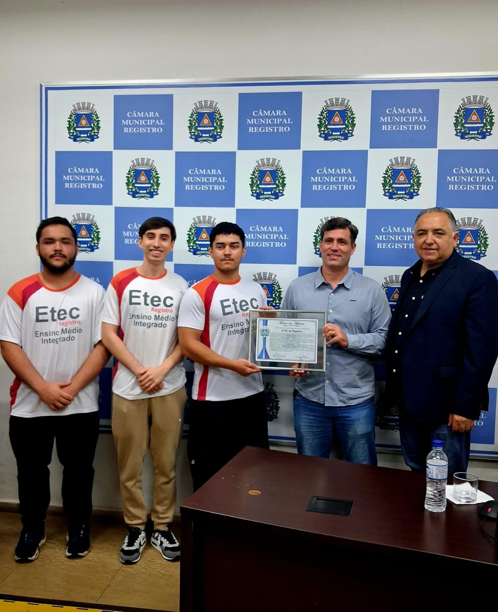
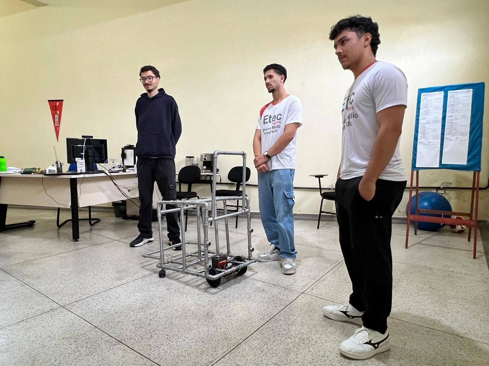
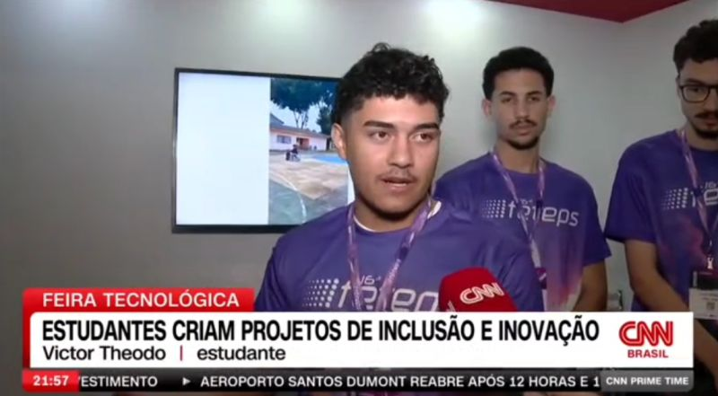
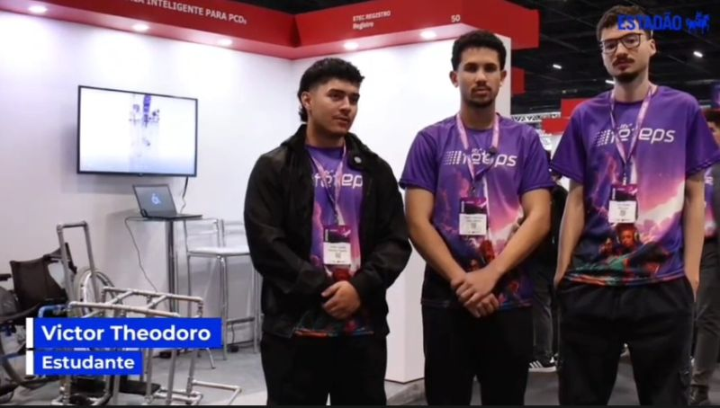

1º Lugar
out 2025
Votação popular de melhor projeto da 6ª FETEC
Projeto WACS — Autonomia Inteligente para PCD’s. Reconhecimento pelo impacto social e inovação.
ETEC de Registro
2023 - 2025
TécnicoCisco Networking Academy
2025
CertificadoCisco Networking Academy
2024
CertificadoDanki Code
2023
CertificadoSebrae-SP
2023
WorkshopSistema inteligente de automação para cadeiras de rodas desenvolvido para promover independência e acessibilidade. Inclui controle por voz, navegação assistida por IA e integração completa com dispositivos IoT para pessoas com deficiência motora.
A maior feira de tecnologia pública da América Latina, reunindo inovações e projetos transformadores do Brasil

Login seguro com validação de credenciais

Interface principal com visão geral do sistema

Interface para controle de dispositivos

Controles especiais para situações de emergência

Gerenciamento de múltiplos locais

Gerenciamento de configurações pessoais

Setup de dispositivos IoT na rede
Conquistas registradas oficialmente em eventos acadêmicos e esportivos.
Projeto WACS — Autonomia Inteligente para PCD’s. Reconhecimento pelo impacto social e inovação.
Representante do WACS da Etec de Registro no maior evento acadêmico de tecnologia e inovação do Brasil.
Projeto “Educação Sexual”. Reconhecimento pela relevância e impacto na comunidade.
Campeão no 7º Campeonato Brasileiro. Local: Osasco-SP.
Destaque em programação e estratégia de robôs na competição estadual.
Classificação para representar a instituição na fase regional.
Prêmios, certificados e conquistas que marcaram minha trajetória profissional.

Honra de receber Moção de Aplauso da Câmara Municipal de Registro pelo 7º lugar na maior feira de tecnologia da América Latina, reconhecendo liderança e inovação no Vale do Ribeira.
Menção especial do vereador Marcelo Comeron ao projeto WACS na sessão ordinária da Câmara, destacando impacto social e compromisso com acessibilidade.

Apresentação aos vereadores Sylvio Murasawa e Marcelo Comeron, resultando em feedbacks valiosos, apoio institucional e doação de cadeira de rodas motorizada.
Confira as entrevistas, artigos e reconhecimentos que destacam minha trajetória profissional.

Victor Theodoro foi entrevistado pela CNN Brasil, onde apresentou suas habilidades em desenvolvimento fullstack e sua experiência em projetos de tecnologia assistiva. A entrevista destacou sua trajetória como jovem desenvolvedor e sua contribuição para a inovação tecnológica no Brasil.
Ver Post
Victor Theodoro foi destaque em entrevista exclusiva no jornal Estadão, onde compartilhou sua experiência como desenvolvedor fullstack junior e sua participação em projetos inovadores de tecnologia assistiva. A matéria destacou sua trajetória acadêmica e profissional, enfatizando seu compromisso com a inovação social através da tecnologia.
Ver MatériaVictor Theodoro foi destacado pelo Centro Paula Souza como um dos jovens talentos em desenvolvimento de software. A matéria apresenta sua trajetória acadêmica na Etec de Registro, destacando suas habilidades em desenvolvimento fullstack e sua participação em projetos inovadores. Esta cobertura institucional reconhece sua dedicação aos estudos e seu potencial como profissional da tecnologia.
Acessar2º lugar nacional no torneio de robótica do CPS com o projeto BarbieScript.
Ver ResultadoDestaque na FETEPS Premium, reconhecendo inovação e qualidade técnica.
Ver Projeto